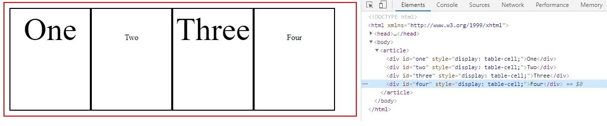

One
Two
Three
Four
Captura de los resultado para el cambio de estilo CSS
1. Aplicación del estilo "display: inline"
2. Aplicación del estilo "display: inline-block"
3. Aplicación del estilo "display: ms-flex"
4. Aplicación del estilo clear boxes CSS
5. Aplicación del estilo table-cell CSS

6. Aplicación del estilo position: absolute CSS
7. Aplicación del estilo position: fixed CSS
8. Aplicación del estilo three atributo CSS